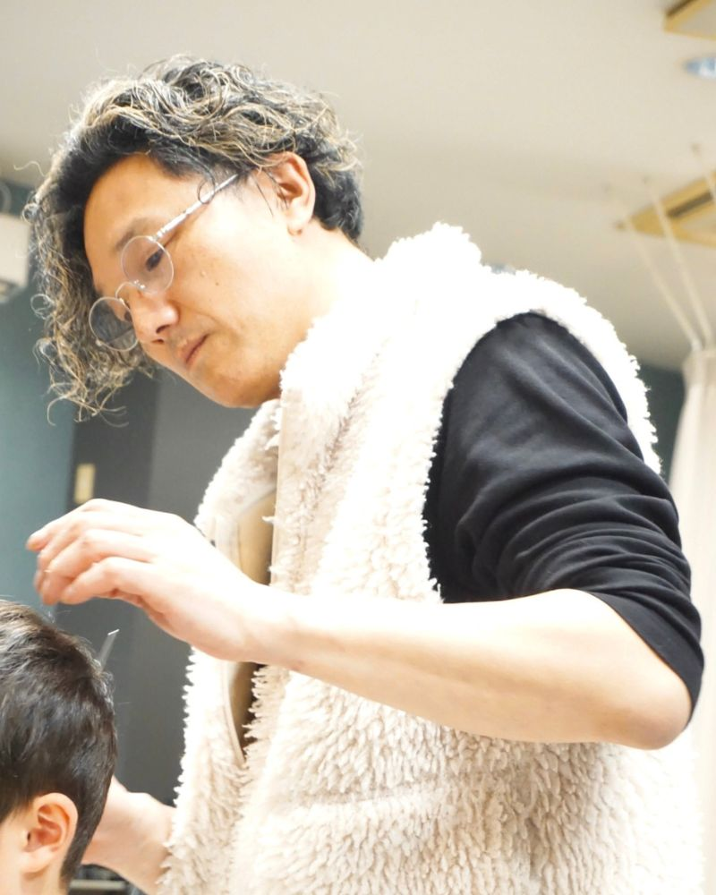
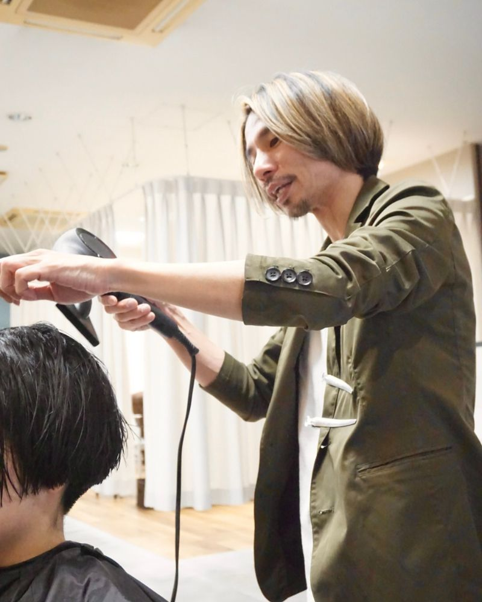
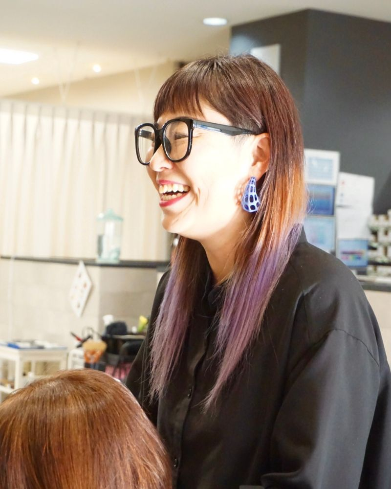
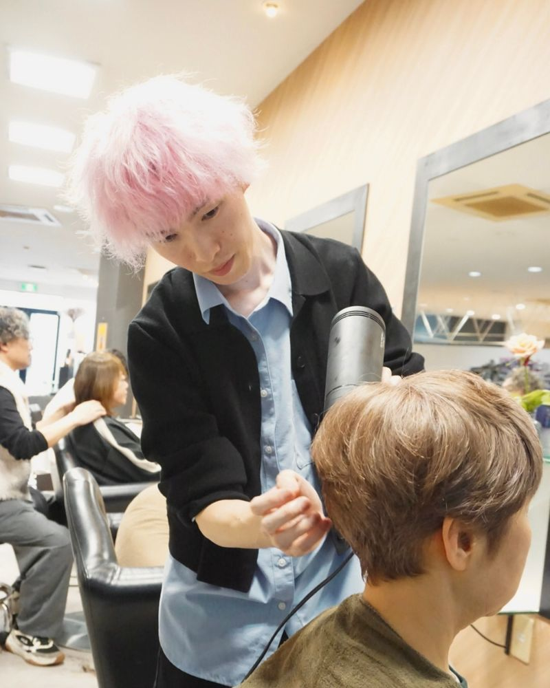
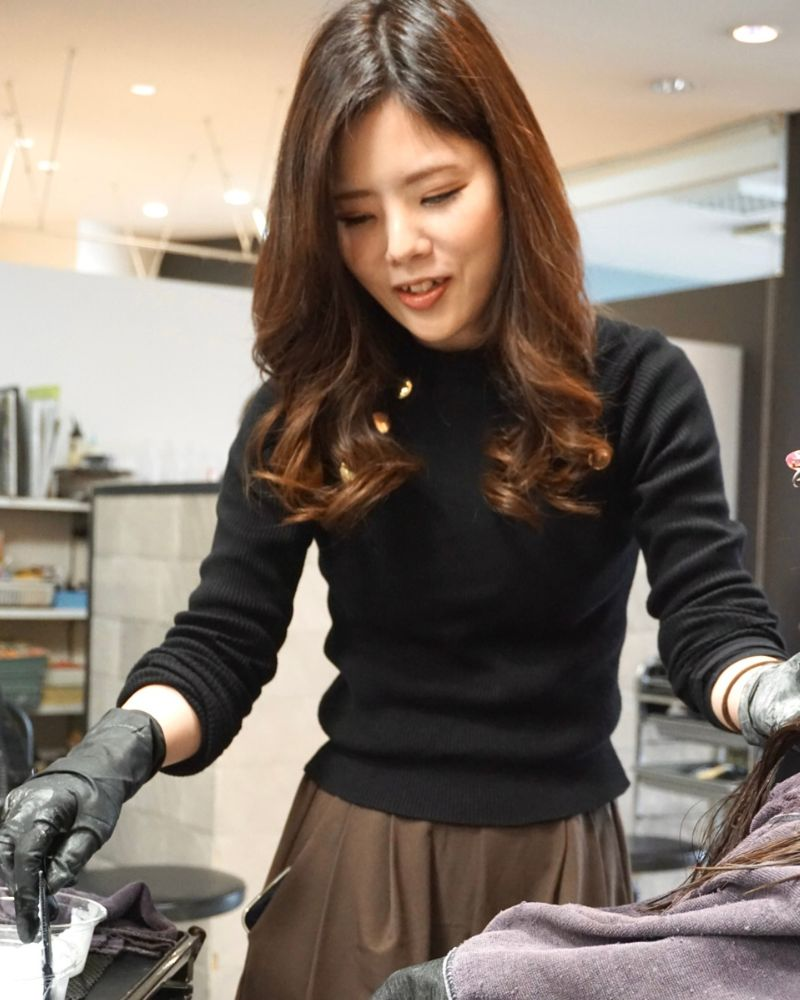
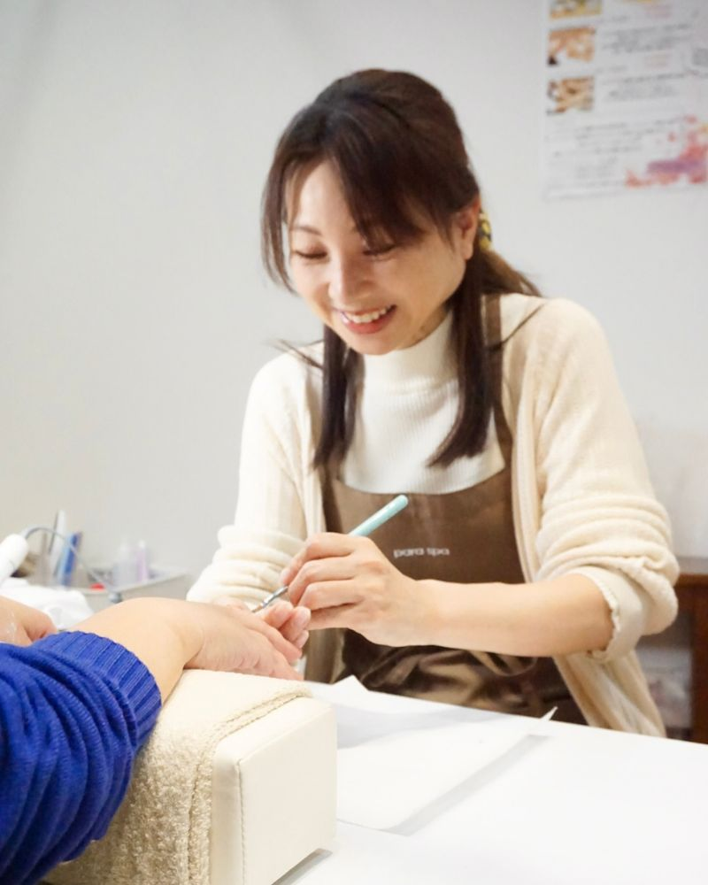
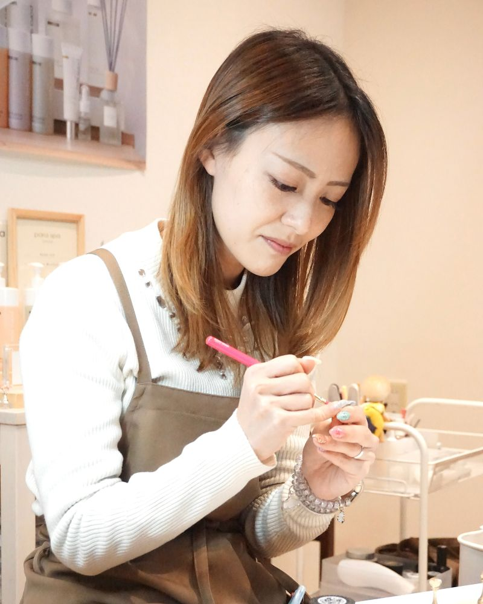
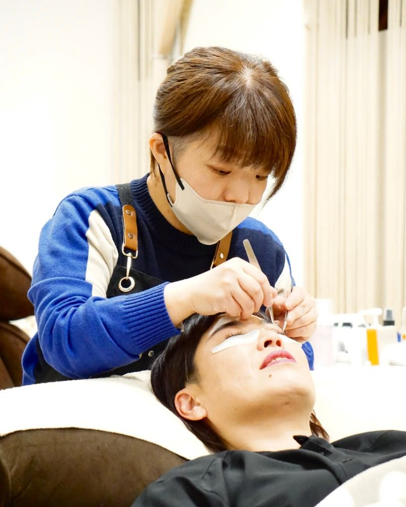
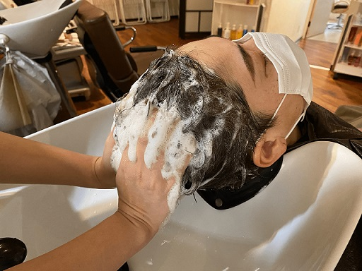
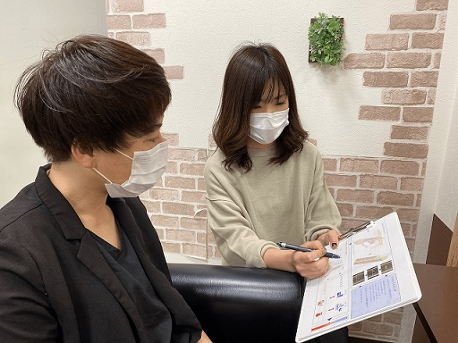

【 staff 】
あなたの変化を、一番近くで喜べる存在でありたい。
Scroll
⇩
Stylist
～スタイリスト～

名前
前田 隆憲(マエダ タカノリ)
役職
代表兼スタイリスト｜30年以上
得意なスタイル
1.カッコいいショート、ロング
2.ふんわり可愛いボブ
3.レイヤースタイル
一言コメント
お客様に長く愛され、スタッフが誇りを持てるサロンであり続けたいと思っています。

名前
野中 一樹(ノナカ カズキ)
役職
店長兼スタイリスト｜15年以上
得意なスタイル
1.ショートボブ
2.白髪ぼかしハイライト
一言コメント
スタッフと協力しながら、心地よい空間と確かな技術をお届けできるよう努めています。

名前
井上 千絵(イノウエ チエ)
役職
スタイリスト・アシスタント｜25年以上
得意なスタイル
1.似合わせカラー診断
2.カウンセリング
一言コメント
長年この仕事を続けてきたからこそ、美容の楽しさも厳しさも知っています。 本気で成長したい方と、同じ現場で切磋琢磨できたら嬉しいです。

名前
安森 日向(ヤスモリ ヒュウガ)
役職
アシスタント｜5年目
得意なスタイル
1.ヘッドスパ
一言コメント
先輩方の技術を学びながら、自分自身も一人前のスタイリストを目指して努力しています。

名前
上戸 三緒(カミト ミオ)
役職
スタイリスト｜3年目
得意なスタイル
1.フェミニンボブ
2.顔回りレイヤー
3.似合わせカラー
一言コメント
スタッフ同士の距離が近く、分からないこともすぐに聞ける環境です。 一緒に楽しく成長できる仲間が増えたら嬉しいです。
Nailist
～ネイリスト～

名前
溝畠 紀子(ミゾハタ ノリコ)
役職
ネイリスト｜17年目
得意なデザイン
1.肌なじみカラー
2.美フォルム作り
3.ハンド・フットケア
一言コメント
17年の経験を活かし、お客様一人ひとりに似合う上品なデザインをご提案いたします。

名前
中満 かえで(ナカミツ カエデ)
役職
ネイリスト｜5年目
得意なデザイン
1.手書きアート
2.3Dアート
一言コメント
楽しい仲間たちに囲まれて、毎日充実しながら働いています。
Eyelist
～アイリスト～

名前
土屋 裕子(ツチヤ ユウコ)
役職
アイリスト｜17年目
得意なデザイン
1.ナチュラルデザイン
2.目元に合わせたデザイン
3.キュートデザイン
一言コメント
目元はお顔の印象を大きく左右する大切な部分。丁寧なカウンセリングと施術を心がけています。
Training Program
～新人教育プログラム～
【基礎から学べるステップ制】

接客マナー・シャンプー・カラー補助など、 美容師としての土台を一つずつ確認します。 「いきなり入客させられる」ということはありません。
【先輩スタッフのフォロー体制】

定期的な技術確認を行い、 出来ている部分・改善点を明確にします。 先輩が横で見守るため安心して練習できます。